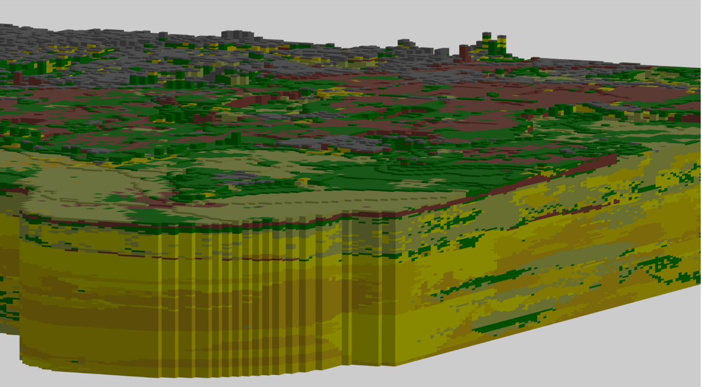

Creative Commons Attribution 4.0 International Public License (CC-BY)
Samenvatting
Deze BRO gegevenscatalogus beschrijft het ondergrondmodel GeoTOP.
Status van dit document
Deze paragraaf beschrijft de status van dit document ten tijde van publicatie. Het is mogelijk dat er actuelere versies van dit document bestaan. Een lijst van Geonovum publicaties en de laatste gepubliceerde versie van dit document zijn te vinden op https://www.geonovum.nl/geo-standaarden/alle-standaarden.
Dit is de definitieve versie van het informatiemodel. Wijzigingen naar aanleiding van consultaties zijn doorgevoerd.
Dit is de vastgestelde catalogus die hoort bij Bijlage II van de Regeling basisregistratie
ondergrond en verwijst naar artikel 11 van de Regeling basisregistratie ondergrond.
De andere delen zijn als niet normatief aangeduid en voorzien van een grijze achtergrond.
1. Inleiding
1.1 Doel en doelgroep
In de basisregistratie ondergrond (BRO) wordt een aantal typen gegevens geregistreerd, de registratieobjecten.
Een catalogus is de gegevensdefinitie van een registratieobject en beschrijft welke gegevens van het object in de BRO zijn opgeslagen.
Het document is bedoeld voor alle gebruikers van de BRO en moet duidelijk maken welke gegevens er precies in het systeem zitten.
Aan aanleverende partijen moet het vertellen welke gegevens in de basisregistratie ondergrond moeten komen en aan welke eisen die moeten
voldoen, en aan afnemende partijen welke gegevens zij in de basisregistratie ondergrond mogen verwachten.
Het document is voor een breed publiek bedoeld en de informatie moet naast precies ook begrijpelijk zijn.
1.2
Samenhang met andere documentatie
Voor ieder registratieobject worden de volgende beschrijvende documenten opgesteld:
de catalogus
de handboeken voor inname en uitgifte
de koppelvlakbeschrijvingen voor inname en uitgifte.
De catalogus beschrijft de inhoud van de basisregistratie ondergrond en vormt de basis voor de andere beschrijvende documenten. In de catalogus staan de definities van de gegevens van het registratieobject, de entiteiten en attributen, met een beschrijving van de onderlinge samenhang. Bij de definitie worden de kardinaliteit (het aantal keer dat het gegeven voorkomt), de regels die in controles worden gebruikt en de waarden die zijn toegestaan vermeld.
Een handboek voor inname of uitgifte beschrijft het proces dat bij inname of uitgifte van gegevens wordt doorlopen.
In een handboek worden ook de gegevens gedefinieerd die betrekking hebben op het proces van inname of uitgifte. Om te zien
wat er aangeleverd moet worden of wat er uitgeleverd kan worden, heeft men de catalogus nodig.
De koppelvlakbeschrijvingen zijn geschreven voor softwareontwikkelaars. Op basis van de twee vorige typen documenten
staat hierin beschreven hoe het registratieobject en de bijbehorende transacties worden vertaald naar het technische koppelvlak
dat is gerealiseerd door middel van webservices. De koppelvlakbeschrijving gaat dus in op de technische realisatie van
de transacties waarbinnen gegevens van het registratieobject worden uitgewisseld.
GeoTOP is een driedimensionaal geologisch model van de laagopbouw en grondsoort (bijvoorbeeld klei, zand, veen) van de ondiepe ondergrond van Nederland tot een diepte van maximaal 50 m onder NAP. In GeoTOP is de ondergrond onderverdeeld in een regelmatig driedimensionaal grid (raster) van aaneengesloten voxels (volumecellen) van 100 bij 100 m in de horizontale richtingen en 0,5 m in de verticaal. Aan elke voxel zijn eigenschappen gekoppeld. Dit zijn de lithostratigrafische c.q. geologische eenheid (laag) waartoe een voxel behoort, de lithoklasse (grondsoort) die representatief is voor de voxel en een aantal attributen die tezamen een maat van modelonzekerheid vormen. Behalve voxels bevat GeoTOP ook een gedetailleerd lagenmodel en de geïnterpreteerde boormonsterbeschrijvingen die bij het maken van het model gebruikt zijn.
1.3 Leeswijzer
Hoofdstuk 1 geeft het doel en de doelgroep, de samenhang met andere documenten en de versiehistorie van deze catalogus.
Hoofdstuk 2 behandelt enkele algemene aspecten van het BRO-systeem en behandelt begrippen van algemene aard.
Hoofdstuk 3 geeft de definitie van het registratieobject, van de delen waaruit het is opgebouwd, de entiteiten, en
van de eigenschappen van die delen, de attributen.
Hoofdstuk 4 ten slotte geeft de definitie van de codelijsten waarnaar in hoofdstuk 3 verwezen wordt.
Hoofdstuk 5 geeft een toelichting op het GeoTOP model.
2. Algemene kenmerken en begrippen
2.1 Opzet van de landelijke voorziening
De landelijke voorziening van de basisregistratie ondergrond is een systeem dat een schakel vormt in een informatieketen. Aan het begin van de keten staan bestuursorganen die opdracht geven tot de productie van gegevens, of zelf gegevens produceren. Die bestuursorganen worden bronhouders genoemd. De geproduceerde gegevens worden door een dataleverancier geleverd aan de beheerder van het systeem, de registerbeheerder. De bronhouder is verantwoordelijk voor de levering van gegevens. Hij kan besluiten zelf dataleverancier te zijn of andere partijen een machtiging voor levering te verlenen. De beheerder van de landelijke voorziening van de BRO registreert de aangeleverde gegevens en levert ze voor (her)gebruik door aan allerlei afnemers.
De opzet van het systeem moet begrepen worden vanuit de verantwoordelijkheden die in de keten zijn belegd. De aangeleverde gegevens vallen onder de verantwoordelijkheid van de bronhouder en de registerbeheerder mag die gegevens niet veranderen. De registerbeheerder moet echter wel gegevens toevoegen om het systeem te kunnen beheren en hij kan gegevens toevoegen om de afnemers goed van dienst te kunnen zijn.
Bij wet is geregeld dat de basisregistratie ondergrond zo wordt opgezet dat er onderscheid bestaat tussen de gegevens die aan de registerbeheerder zijn aangeleverd en de gegevens die de registerbeheerder aan de afnemers verstrekt. Het systeem valt uiteen in twee grote deelsystemen, het register brondocumenten ondergrond en de registratie
ondergrond (zie figuur 1).
Een geheel van gegevens dat door of onder verantwoordelijkheid van een bronhouder wordt aangeleverd, wordt een brondocument genoemd. De brondocumenten worden in het register brondocumenten ondergrond opgeslagen. De gegevens uit de brondocumenten worden samen met de gegevens die de registerbeheerder toevoegt in de registratie ondergrond vastgelegd. De registratie ondergrond is het deelsysteem dat gebruikt wordt voor uitgifte.
Figuur 1De twee grote deelsystemen van de landelijke voorziening van de BRO.
Met deze opzet verkrijgt het systeem de nodige flexibiliteit. Zo kan een object in de registratie ondergrond gegevens bevatten die uit meer dan één brondocument afkomstig zijn en bij uitgifte kunnen gegevens van verschillende objecten met elkaar gecombineerd worden. Ook is het mogelijk met het brondocument gegevens op te slaan die alleen voor de bronhouder en de aanleverende partij van belang zijn.
De catalogus dekt alle gegevens die opgenomen zijn in de registratie ondergrond. Verreweg de meeste gegevens komen uit de brondocumenten die de dataleverancier aanlevert en een paar gegevens komen voort uit de overdracht van een brondocument aan de registerbeheerder. Aan de aangeleverde gegevens worden enkele gegevens door de registerbeheerder toegevoegd. Als een gegeven is toegevoegd door de BRO wordt dat in de beschrijving expliciet vermeld.
Alle gegevens in de registratie ondergrond worden uitgegeven, maar niet alle afnemers kunnen alle gegevens geleverd krijgen. De gegevens die niet aan alle afnemers worden uitgeleverd zijn de gegevens die alleen nodig zijn in de communicatie tussen de registerbeheerder enerzijds en de dataleveranciers en bronhouders anderzijds.
2.2 Registratieobject
Het registratieobject is dé eenheid in de data-architectuur van de basisregistratie ondergrond. Voor de registerbeheerder is het de elementaire bouwsteen van het systeem dat hij moet beheren.
Een registratieobject verwijst naar een eenheid van informatie die onder de verantwoordelijkheid van één bronhouder valt en die met een bepaald doel is of wordt gemaakt. Het is in directe of indirecte zin gedefinieerd in de ruimte en dat wil zeggen dat een registratieobject een plaats op het aardoppervlak heeft of dat het gekoppeld is aan een ander type registratieobject met een plaats op het aardoppervlak.
Een registratieobject is niet alleen in de ruimte maar ook in de tijd gedefinieerd. Het leven van een registratieobject begint op het moment dat de gegevens zijn geregistreerd en dat is zo kort mogelijk nadat de gegevens zijn geproduceerd. De levensduur van een registratieobject, en de veranderlijkheid van de gegevens verschilt van object tot object. Een grondwatermonitoringput kan tientallen jaren gebruikt worden voor het meten van grondwaterstanden en in de periode kunnen er nieuwe gegevens ontstaan. Dat betekent dat de gegevens van de put in de registratie ondergrond gedurende zijn hele levensduur bijgewerkt moeten kunnen worden. Aan de andere kant van het spectrum staan de objecten waarvan alle gegevens in een keer worden vastgelegd. Geotechnisch sondeeronderzoek is daar een voorbeeld van. Sondeeronderzoek is eenmalig onderzoek en het resultaat ervan kan al na een of enkele dagen aan de bronhouder worden overhandigd.
2.3 Registratiedomein
Registratieobjecten worden in de basisregistratie ondergrond gegroepeerd in domeinen. Vooralsnog worden zes domeinen onderscheiden:
bodem- en grondonderzoek
bodemkwaliteit
grondwatermonitoring
grondwatergebruik
mijnbouwwet
modellen.
De domeinen zijn vanuit het oogpunt van beheer van belang voor de ordening van het systeem. Daarnaast zijn zij nuttig in de communicatie met de partijen die bij de realisatie van het systeem betrokken zijn.
2.4 Kwaliteitsregime
In de basisregistratie ondergrond worden niet alleen gegevens geregistreerd die dateren van na de datum waarop de wet van kracht is geworden. Ook oudere gegevens zullen in de basisregistratie ondergrond worden opgenomen. De noodzaak daartoe ligt in de wet verankerd. Die schrijft voor dat de gegevens uit de eerder bestaande systemen DINO en BIS zo veel mogelijk naar de BRO moeten worden overgezet. Verder staat de wet toe dat bronhouders tot vijf jaar na de inwerkingtreding van de wet historische gegevens ter registratie mogen aanbieden.
Historische gegevens kunnen niet altijd voldoen aan de strikte regels die de BRO stelt. Zo kan het voorkomen dat voor gegevens die volgens de strikte regels van de BRO verplicht zijn, geen waarde bekend is. Om de verwerking van de twee categorieën gegevens naast elkaar mogelijk te maken, worden twee kwaliteitsregimes gehanteerd. Voor de aanlevering van gegevens volgens de strikte regels geldt het IMBRO-regime. Bij de aanlevering van historische gegevens wordt geaccepteerd dat een aantal formeel verplichte gegevens geen waarde heeft. Voor deze gegevens wordt het IMBRO/A-regime gehanteerd en dat kent dus minder strikte regels.
De introductie van de twee kwaliteitsregimes geeft de bronhouder gedurende een bepaalde periode een zekere mate van vrijheid. Het kan bijvoorbeeld praktisch blijken het IMBRO/A-regime te hanteren voor gegevens die weliswaar pas na de datum waarop de wet in werking is getreden zijn geproduceerd maar die voortkomen uit opdrachten die al voor die datum zijn gegeven. Ook kan het voorkomen dat historische gegevens wel aan alle strikte voorwaarden voldoen en dan is het wenselijk de gegevens onder IMBRO-regime aan te leveren.
De periode waarin de bronhouders die vrijheid hebben wordt de transitieperiode genoemd. Over de duur van de transitieperiode zijn nog geen afspraken gemaakt. Na afloop van de transitieperiode kan alleen onder het strikte IMBRO-regime worden aangeleverd.
2.5 Formele en materiële geschiedenis
De basisregistratie ondergrond maakt deel uit van een stelsel van basisregistraties. Binnen het stelsel maakt men onderscheid tussen de materiële geschiedenis en de formele geschiedenis van een object.
Het begrip materiële geschiedenis wordt gebruikt om de veranderingen van eigenschappen van een object in de werkelijkheid aan te duiden. De materiële geschiedenis van een object wordt, voor zover relevant, in de registratie ondergrond vastgelegd. Niet alle registratieobjecten hebben een materiële geschiedenis, alleen de objecten met een levensduur, zoals de grondwatermonitoringput.
Het begrip formele geschiedenis wordt gebruikt voor de veranderingen van eigenschappen van een object in de registratie zelf. De meeste van die veranderingen gaan terug op een verandering van eigenschappen in de werkelijkheid, en de formele geschiedenis geeft aan wanneer de veranderingen in het systeem geregistreerd zijn. De formele geschiedenis kent ook gebeurtenissen die niet het gevolg zijn van een verandering in de werkelijke eigenschappen van een object. Die gebeurtenissen hebben betrekking op correcties. Het kan gebeuren dat een bronhouder erachter komt dat er een onjuiste waarde was geregistreerd en dan zorgt hij ervoor dat die verbeterd wordt. De registratie van de verbetering is een formele gebeurtenis.
Alle registratieobjecten hebben een formele geschiedenis en die wordt in de registratie ondergrond globaal vastgelegd in de registratiegeschiedenis van het object. Globaal wil zeggen dat de registratie ondergrond alleen een overzicht van de formele geschiedenis geeft. Voor de details moet het register brondocumenten ondergrond worden geraadpleegd.
Bij correctie wordt het betreffende gegeven in de registratie ondergrond overschreven en is de oude waarde van het gegeven niet meer direct beschikbaar voor de afnemers.
Zou een afnemer toch willen weten wat de eerdere foute waarde was, dan moet hij het register brondocumenten ondergrond raadplegen.
2.6 Coördinaten en referentiestelsels
De registratieobjecten van de basisregistratie ondergrond zijn gedefinieerd in de ruimte en dat wil zeggen dat een object zelf een plaats op het aardoppervlak, een locatie, heeft, of dat het gekoppeld is aan een ander type registratieobject met een locatie. Afhankelijk van het type registratieobject, wordt de locatie geregistreerd als een punt, een lijn of een vlak.
De locatie is de horizontale positie van een object. Voor bepaalde objecten is het voldoende dat alleen die horizontale positie wordt vastgelegd, maar voor veel objecten is ook de verticale positie van belang.
Posities worden vastgelegd in coördinaten en die zijn gedefinieerd in een bepaald referentiestelsel.
Er zijn verschillende typen referentiestelsels. Zo spreekt men van horizontale referentiestelsels (2D), verticale referentiestelsels (1D), gecombineerde referentiestelsels (2D, 1D) en werkelijke 3D referentiestelsels. In Nederland worden de horizontale en de verticale component van een positie in een afzonderlijk stelsel uitgedrukt. Het is vandaag de dag mogelijk met gps een positie in een 3D-referentiestelsel vast te leggen, maar de wens over te stappen op het gebruik van 3D is nog door geen van de partijen die betrokken zijn bij de basisregistratie ondergrond naar voren gebracht.
2.6.1 Referentiestelsels voor de horizontale positie
In Nederland zijn traditioneel verschillende referentiestelsels voor de horizontale positie in gebruik. In 2009, bij de eerste voorbereidingen voor de totstandkoming van de basisregistratie ondergrond, is al vastgesteld dat de verscheidenheid aan referentiestelsels de basisregistratie ondergrond voor problemen stelt omdat de registratie dan niet gemakkelijk op een eenduidige manier bevraagd kan worden. In de registratie ondergrond worden namelijk zowel gegevens met een locatie op land als gegevens met een locatie op zee geregistreerd. In de toenmalige praktijk werden op land en op zee verschillende stelsels gebruikt. Op land werd RD gebruikt en op zee waren verschillende stelsels in gebruik, waarvan WGS84 de belangrijkste was.
In 2009 was ook al bekend dat de Europese kaderrichtlijn INSPIRE de lidstaten vraagt de gegevens in Europa in één referentiestelsel uit te gaan wisselen, te weten in ETRS89. Met dat in gedachten, is het besluit genomen het BRO-systeem zo in te richten dat de registratie bevraagd gaat worden in ETRS89.
Het besluit wordt ondersteund door ontwikkelingen in Nederland. Sinds 2013 wordt er door de drie belangrijkste autoriteiten in Nederland op het gebied van referentiestelsels, het Kadaster, de Dienst der Hydrografie en Rijkswaterstaat, gewerkt aan de totstandkoming van nieuwe afspraken. Die afspraken moeten in lijn zijn met Europese afspraken en leiden tot heldere en eenduidige transformatieprocedures tussen referentiestelsels. Concreet betekent dit dat in Nederland op termijn het ETRS89-stelsel als standaard zal worden gehanteerd voor het uitwisselen van geo-informatie.
Het besluit betekent niet dat de gegevens ook in ETRS89 aangeleverd moeten worden. De basisregistratie ondergrond voorziet een periode van transitie waarin de aanleverende partijen zelf bepalen wanneer zij overstappen op ETRS89. Die periode zal naar verwachting jaren duren. Om de transitie te ondersteunen hanteert de basisregistratie ondergrond de volgende spelregels:
Gegevens mogen in een beperkt aantal referentiestelsels worden aangeleverd (RD, WGS84 en ETRS89).
Voor locaties op land wordt alleen RD of ETRS89 toegestaan.
Voor locaties op zee wordt alleen WGS84 of ETRS89 toegestaan.
De aangeleverde coördinaten worden in de registratie opgeslagen.
De aangeleverde coördinaten worden door de basisregistratie ondergrond getransformeerd naar
het ETRS89 referentiestelsel.
De getransformeerde coördinaten worden naast de aangeleverde coördinaten opgeslagen.
Bij de getransformeerde coördinaten wordt ook een identificatie van de gebruikte transformatiemethode opgeslagen.
Als de coördinaten in ETRS89 zijn aangeleverd, dan staat bij aangeleverde en getransformeerde positie dezelfde
informatie. Voor de locatie worden de getransformeerde coördinaten en de aangeleverde coördinaten beide
aan de afnemers verstrekt.
2.6.2 Referentiestelsels voor de verticale positie
In Nederland zijn voor verticale posities op land en zee verschillende referentiestelsels in gebruik. Op land wordt NAP gebruikt. Op zee is het in de voor de BRO relevante werkvelden gebruikelijk posities uit te drukken t.o.v. het gemiddeld zeeniveau (MSL, Mean Sea Level), maar posities t.o.v. LAT komen ook voor (Lowest Astronomical Tide). Dit laatstgenoemde stelsel wordt in de kaderrichtlijn INSPIRE genoemd als het stelsel van voorkeur voor het uitdrukken van verticale posities op zee. De basisregistratie ondergrond staat daarom op zee het gebruik van LAT naast MSL toe. Aangeleverde verticale posities worden door de BRO niet getransformeerd.
2.7 Gegevens op land en op zee
De basisregistratie ondergrond bevat gegevens over de ondergrond van Nederland en zijn zgn. Exclusieve Economische Zone (EEZ). De EEZ is het gebied op de Noordzee waar Nederland economische rechten heeft. Voor de referentiestelsels die bij aanlevering worden toegestaan, is het van belang te weten of de locatie van een object op zee of op land ligt.
Als scheidingslijn tussen land en zee wordt in de basisregistratie ondergrond de UNCLOS-basislijn gehanteerd. Het beheer van de basislijn valt onder de verantwoordelijkheid van de Dienst der Hydrografie van het ministerie van Defensie. Deze dienst voert die taak uit op basis van het Zeerechtverdrag van de Verenigde Naties uit 1982, dat in het Engels de United Nations Convention on the Law of the Sea (UNCLOS) heet.
De basislijn is opgebouwd uit de nulmeterdieptelijn zoals weergegeven op de zeekaarten en enkele rechte basislijnen die onder meer de monding van de Westerschelde en de wateren tussen de Waddeneilanden afsluiten.
De grens tussen land en zee is veranderlijk. De Dienst der Hydrografie stelt de grens opnieuw vast wanneer daartoe voldoende aanleiding is. De BRO hanteert bij inname de meest recente versie van de UNCLOS-basislijn en controleert daarmee of de juiste referentiestelsels gebruikt worden.
Tussen het moment waarop de locatie van een object wordt bepaald en het moment waarop het gegeven in de basisregistratie ondergrond wordt vastgelegd verloopt enige tijd. In die periode kan de positie van de UNCLOS-basislijn opnieuw zijn vastgesteld, en dan ontstaat er een discrepantie die bij het aanleveren van gegevens tot problemen kan leiden. Wanneer een dergelijk probleem zich voordoet, wordt de dataleverancier gevraagd contact op te nemen met de registratiebeheerder om gezamenlijk tot een oplossing te komen.
Een soortgelijk probleem doet zich voor met betrekking tot de begrenzing van Nederland, met name van het Nederlands territoir. De grenzen van Nederland worden ieder jaar op 1 januari vastgesteld door het Kadaster en vastgelegd in de basisregistratie kadaster. De BRO controleert bij inname of een object in het gebied ligt dat Nederland en zijn Exclusieve Economische Zone omvat, en hanteert daarbij de actuele grenzen. Ook bij problemen die te herleiden zijn tot een verandering in de begrenzing van Nederland, wordt de dataleverancier gevraagd contact op te nemen met de registratiebeheerder om gezamenlijk tot een oplossing te komen.
2.8 Nauwkeurigheid van meetwaarden
Voor zinvol gebruik van gegevens met een gemeten, berekende of anderszins bepaalde waarde is het noodzakelijk dat de nauwkeurigheid van die gegevens bekend is.
Het begrip nauwkeurigheid laat zich in deze context het best omschrijven als de juistheid van een gemeten of berekende waarde. In de meeste processen waarin de waarde van een gegeven wordt bepaald, kan de afwijking van de daadwerkelijke waarde slechts via een kalibratie- of statistisch proces worden verkregen. Het resultaat omvat dan niet alleen een van de mogelijke realisaties van een meetwaarde maar ook informatie over de mogelijke spreiding van de meetwaarden.
De basisregistratie ondergrond gaat ervan uit dat de producenten van gegevens de metingen en berekeningen uitvoeren binnen een stelsel van afspraken dat binnen het desbetreffende werkveld is vastgelegd. Uitgangspunt is dat ook de eisen waaraan de gegevens op het gebied van nauwkeurigheid moeten voldoen in afspraken zijn vastgelegd. Dat kunnen praktische werkafspraken zijn, maar ook afspraken die vertaald zijn naar ISO- en NEN-normen. In de catalogus wordt in beginsel verwezen naar die normen. Waar deze normen niet voorzien in afspraken over de nauwkeurigheid, stelt de basisregistratie ondergrond hieraan specifieke eisen. Deze zijn dan vermeld in de catalogus.
2.9 Authentiek gegeven
In de wet is een aantal gegevens expliciet als authentiek aangeduid. Dit wordt in de catalogus nader uitgewerkt; verreweg de meeste gegevens zijn authentiek.
Met de aanduiding authentiek wordt, zoals geformuleerd in de memorie van toelichting op de wet, tot uitdrukking gebracht dat:
Het gegeven in samenhang met andere gegevens door een groot aantal bestuursorganen in verschillende processen wordt gebruikt en derhalve bestemd is voor informatie-uitwisseling tussen bestuursorganen;
de verantwoordelijkheid voor betrouwbaarheid van het gegeven eenduidig geregeld is;
het gegeven onderworpen is aan intern en extern kwaliteitsonderzoek, en
het gegeven zich leent voor verplicht gebruik door bestuursorganen en eenmalige verstrekking door burgers en bedrijven aan de overheid.
In de praktijk mag een gebruiker van de gegevens ervan uitgaan dat alle gegevens correct zijn. De catalogus moet de gebruiker alle informatie geven die voor een goed begrip daarvan nodig is.
Heeft een gebruiker echter gerede twijfel over de juistheid van een authentiek gegeven dan wordt verwacht dat hij de registerbeheerder daarvan op de hoogte brengt. Bestuursorganen zijn, bij gerede twijfel over de juistheid van een authentiek gegeven (of het ontbreken ervan), zelfs verplicht daarvan melding te maken.
Voor alle gegevens is aangegeven of ze authentiek zijn. Ook is voor alle gegevens aangegeven of ze aanwezig moeten zijn en een waarde moeten hebben. Dat laat zien dat er gegevens kunnen zijn die authentiek zijn maar geen waarde hoeven te hebben. Juist omdat er verplichtingen gelden t.a.v. authentieke gegevens, vraagt dit om een korte toelichting.
Wanneer een authentiek gegeven geen waarde heeft moet de gebruiker ervan uitgaan dat het gegeven niet is geproduceerd. Dat geval kan zich uiteraard alleen voordoen wanneer er vrijheid van beslissen bestaat bij de bronhouder of de producent.
Voor de duidelijkheid, als er wel een waarde is dan moet die ook in de BRO worden opgenomen. Bij gerede twijfel over het ontbreken van een waarde, moet een bestuursorgaan dat melden.
3. Domeinmodel
3.1 Het domeinmodel
Het domeinmodel geeft een overzicht van de gegevens van het registratieobject en laat de onderlinge samenhang zien. Modellering van informatie kent verschillende invalshoeken. In de catalogus is het inhoudelijke perspectief gekozen omdat dat de meeste waarde heeft voor de mensen die de informatie moeten begrijpen. Een dergelijk model wordt in de basisregistratie ondergrond een domeinmodel genoemd. Uit het domeinmodel wordt een technisch model afgeleid dat meeweegt dat informatiesystemen efficiënt met elkaar moeten kunnen spreken. Het meer technische model heet productmodel en dat staat aan de basis van de documentatie van de software.
Voor het domeinmodel wordt de UML-notatie gebruikt. Met kennis van de gebruikte symbolen is het gemakkelijk te lezen.
Het domeinmodel is hiërarchisch opgebouwd. De genummerde blokjes in het domeinmodel staan voor de entiteiten waaruit het object is opgebouwd. In de blokjes staan de namen opgesomd van de attributen, de eigenschappen van de entiteiten, met daarachter de naam van de bijbehorende waardenverzameling (domein) en de kardinaliteit. Bij attributen is de kardinaliteit alleen opgenomen wanneer die ongelijk is aan 1. Overigens moet de kardinaliteit altijd in samenhang met de regels die in de definitie van het gegeven zijn opgenomen worden begrepen. De kardinaliteit en de regels bepalen samen of een gegeven al dan niet aanwezig is. De figuren laten ook zien welke attributen alleen aan de dataleverancier en de bronhouder worden uitgeleverd.
De getallen bij de entiteiten geven aan hoe vaak een entiteit voorkomt. De meeste entiteiten hebben kardinaliteit [1] en dat betekent dat een gegeven precies een keer voorkomt. Sommige entiteiten mogen een of meer keer voorkomen, die hebben kardinaliteit [1..*]. Een derde categorie vormen de entiteiten die kardinaliteit [0..1] hebben. Een dergelijk gegeven komt 1 keer voor of niet. De vierde en laatste categorie heeft kardinaliteit [0..*], en een dergelijk gegeven kan 0, 1 of meer keren voorkomen.
Een registratieobject heeft een bepaald kwaliteitsregime. Zoals eerder gesteld wordt een gegevensdefinitie opgesteld vanuit het streven IMBRO/A zo min mogelijk te laten afwijken van en IMBRO. Wanneer dat niet helemaal gelukt is en er voor een IMBRO/A een apart domein nodig is, is dat niet in het domeinmodel zichtbaar. Wanneer dat niet gelukt is en er voor IMBRO/A bijzondere attributen (of entiteiten) bestaan is dat wel in het model aangegeven.
4. Catalogus
Noot: Over deze catalogus
Deze catalogus is automatisch samengesteld op basis van het UML model
"BRO: GeoTOP" door Imvertor 1.47.6 op May 15, 2019 at 07:15:31.
Wanneer je technische fouten of onvolkomenheden aantreft, geef dit dan door aan en geef de code
"GeoTOP-BROGeoTOP-0.4-1-20180925-20190515-091532" door.
Geïnterpreteerde boormonsterbeschrijvingen met beschrijvings- en interpretatie-intervallen
- overzicht
Voxelmodel - overzicht
Lagenmodel - overzicht
4.1 Objecttypen
4.1.1 Objecttype Model
Naam
Model
Herkomst
BRO
Definitie
Een versie van het ondergrondmodel GeoTOP, bestaande uit één of meer modelgebieden.
Een entititeit met het geheel van generieke gegevens die voorkomen bij alle verschillende
soorten registratieobjecten in de basisregistratie ondergrond (BRO).
Een in een modelgebied gebruikt boormonsterbeschrijving waarbij een interpretatie
in geologische eenheden en in lithoklassen is gemaakt.
Herkomst definitie
TNO
Toelichting
Bij het construeren van een modelgebiedversie wordt op een zeker moment een momentopname
(snapshot) gemaakt van de boormonsterbeschrijvingen en de bijbehorende boorbeschrijvingsintervallen
in de bron-databank. De interpretaties van de boormonsterbeschrijvingen worden vervolgens
gebaseerd op deze momentopname. Alle wijzigingen die na de momentopname in de DINO-databank
worden aangebracht, zullen daarom niet zichtbaar zijn in de betreffende modelgebiedversie.
De korrelgrootte in µm, waarbij de zandfractie op basis van gewicht in twee delen
van 50% is verdeeld. Bij het beschrijven wordt dit kenmerk als zandmediaan (getal)
en als klasse waarin deze mediaan valt (zandmediaanklasse) vastgelegd.
De unieke aanduiding van het Modelgebied waarvan het Laag deel uit maakt.
4.1.8 Objecttype Voxel
Naam
Voxel
Herkomst
BRO
Definitie
Een voxel is een blokvormig volume in de ondergrond met uniforme eigenschappen. Een
voxel heeft een locatie, vastgelegd door de (x,y,z)-coördinaten van het middelpunt
van de voxel, en een aantal attributen. De attribuutwaarden zijn representatief voor
de hele voxel, niet alleen voor het middelpunt.
Volgnummer van de preferente stratigrafische volgorde waarin de geologische eenheden
geordend zijn. Lage nummers liggen relatief hoog in de stratigrafische kolom. Het
volgnummer wordt o.a. gebruikt bij het tonen van de geologische eenheden in een legenda.
Kleur volgens de kleurcodering van het RGB-kleursysteem, waarbij kleur wordt uitgedrukt
met behulp van een combinatie van de drie primaire kleuren Rood-Groen-Blauw, uitgaande
van additieve kleurmenging.
Puntgeometrie met de ligging en hoogte van het boormonsterbeschrijving.
Herkomst definitie
NEN:5104
Toelichting
Driedimensionale puntgeometrie, waarbij X-coördinaat en Y-coördinaat in het Rijksdriehoekstelsel
van de ligging van het boormonsterbeschrijving en hoogte van het maaiveld c.q. de
waterbodem ter plaatse van het boormonsterbeschrijving in mm ten opzichte va
De korrelgrootte in µm, waarbij de zandfractie op basis van gewicht in twee delen
van 50% is verdeeld. Bij het beschrijven wordt dit kenmerk als zandmediaan (getal)
en als klasse waarin deze mediaan valt (zandmediaanklasse) vastgelegd.
De mate waarin het model in staat is om een eenduidige schatting te geven van de geologische
eenheid waartoe de voxel behoort.
Herkomst definitie
TNO
Toelichting
De modelonzekerheid is vastgelegd in een reëel getal met waarden vanaf 0 t/m 1, waarbij
0 een zeer kleine modelonzekerheid en 1 een zeer hoge modelonzekerheid aangeeft.
De mate waarin het model in staat is om een eenduidige schatting te geven van de voor
de voxel representatieve lithoklasse.
Herkomst definitie
TNO
Toelichting
De modelonzekerheid is vastgelegd in een reëel getal met waarden vanaf 0 t/m 1, waarbij
0 een zeer kleine modelonzekerheid en 1 een zeer hoge modelonzekerheid aangeeft.
Mogelijk geen waarde
Nee
Indicatie materiële historie
Nee
Indicatie formele historie
Nee
Indicatie kardinaliteit
1
Indicatie authentiek
Authentiek
Formaat
REAL
Indicatie afleidbaar
Nee
4.6.8.14 Relatiesoort details Voxel maakt deel uit van
Naam
maakt deel uit van
Herkomst
BRO
Definitie
De unieke aanduiding van het Modelgebied waarvan de Voxel deel uit maakt.
Volgnummer van de preferente stratigrafische volgorde waarin de geologische eenheden
geordend zijn. Lage nummers liggen relatief hoog in de stratigrafische kolom. Het
volgnummer wordt o.a. gebruikt bij het tonen van de geologische eenheden in een legenda.
Een aanduiding waarmee wordt aangegeven of een bepaalde indicatie al dan niet van
toepassing is.
Code
Naam
Definitie
J
Ja
N
Nee
5. Ondergrondmodel GeoTOP
5.1 Beschrijving
GeoTOP is een registratieobject in het domein modellen. Het gaat in dit domein
om schattingen of voorspellingen van de opbouw en eigenschappen van de bodem of
ondergrond in twee of drie dimensies. Modellen zijn sterk afhankelijk van de
hoeveelheid en kwaliteit van de beschikbare ondergrondgegevens zoals
boormonsterbeschrijvingen. De kwaliteit van de modellen zal daarom toenemen
naarmate er meer ondergrondgegevens in de BRO beschikbaar komen.
GeoTOP is een driedimensionaal geologisch model van de laagopbouw en grondsoort
(bijvoorbeeld klei, zand, veen) van de ondiepe ondergrond van Nederland tot een
diepte van maximaal 50 m onder NAP. In GeoTOP is de ondergrond onderverdeeld in
een regelmatig driedimensionaal grid (raster) van aaneengesloten voxels
(volumecellen) van 100 x 100 m in de horizontale richtingen en 0,5 m in de
verticaal. Aan elke voxel zijn eigenschappen gekoppeld. Dit zijn de
lithostratigrafische c.q. geologische eenheid (laag) waartoe een voxel behoort,
de lithoklasse (grondsoort) die representatief is voor de voxel en een aantal
attributen die tezamen een maat van modelonzekerheid vormen. Behalve voxels
bevat GeoTOP ook een gedetailleerd lagenmodel en de geïnterpreteerde
boormonsterbeschrijvingen die bij het maken van het model gebruikt zijn.
De termen lithostratigrafie, geologische eenheid en lithoklasse
worden hieronder toegelicht:
Lithostratigrafie betekent het rangschikken van gesteentelagen in
eenheden zoals formaties en laagpakketten op basis van lithologische
kenmerken (waaruit bestaat het materiaal?), verbreiding (waar komt de
eenheid voor?) en positie (wat is de ligging ten opzichte van andere
eenheden?). Lithostratigrafische eenheden worden formeel gedefinieerd in de
Stratigrafische Nomenclator van de Ondiepe Ondergrond van Nederland.
In GeoTOP wordt de term geologische eenheid gebruikt in plaats van
lithostratigrafische eenheid omdat niet elke eenheid in het model één-op-één
overeenkomt met een lithostratigrafische eenheid volgens de Nomenclator. Het
kan namelijk voor de modellering nodig zijn om twee of meer
lithostratigrafische eenheden samen te nemen tot één geologische eenheid. De
tegenovergestelde situatie, waar een lithostratigrafische eenheid wordt
gesplitst in een of meerdere geologische eenheden komt ook voor.
Lithologische kenmerken worden in GeoTOP weergegeven door middel van
lithoklassen*, waarin lithologie (grondsoort) en zandkorrelgrootteklassen
zijn gecombineerd in één classificatie.
GeoTOP bestaat uit de volgende in de BRO opgenomen producten die ontstaan uit
een gestandaardiseerd werkproces:
De interpretatie van de boormonsterprofielen in geologische eenheden en
in lithoklasse-eenheden. Elke boormonsterbeschrijving is onderverdeeld
in intervallen van gelijke geologische eenheid. Daarbinnen zijn de
intervallen verder opgedeeld in intervallen van een gelijke lithoklasse.
Breuken. Per breuksegment is aangegeven in welke basis van een
geologische eenheid dit breuksegment nog invloed heeft.
Een lagenmodel waarbij de ondergrond is weergegeven als een stapeling
van geologische eenheden die begrensd zijn door een top- en een basisvlak.
Beide vlakken worden weergegeven als een raster met cellen van 100 x 100
Elke rastercel heeft de diepteligging van top respectievelijk basis
in m onder NAP als attribuut. Uit de top- en basisrasters is een
dikteraster afgeleid met de dikte van de geologische eenheid in m. Tot
slot zijn er voor zowel top als basis standaarddeviatierasters
beschikbaar die de modelonzekerheid van het lagenmodel representeren.
Een voxelmodel waarbij de ondergrond in voxels van 100 x 100 x 0,5 m
ingedeeld is. Elke voxel heeft een aantal attributen, namelijk de
geologische eenheid, de meest waarschijnlijke lithoklasse en een aantal
attributen die tezamen een maat van modelonzekerheid vormen.
De onderlinge samenhang van de in de BRO opgenomen geïnterpreteerde
boormonsterbeschrijvingen, lagenmodel en voxelmodel is geïllustreerd in Figuur
3.1 – 3.3.
Figuur 3.1: 3D weergave van boormonsterbeschrijvingen waarbij de kleuren
verschillende geologische eenheden weergeven.
Figuur 3.2: 3D weergave van een lagenmodel gebaseerd op de geïnterpreteerde
boormonsterbeschrijvingen van Figuur 3.1. Van het lagenmodel zijn alleen de
basisvlakken weergegeven. Elk basisvlak is het resultaat van een ruimtelijke
interpolatie van de in de boormonsterbeschrijvingen aangetroffen basissen van de
betreffende geologische eenheid.
Figuur 3.3: 3D weergave van het lagenmodel van Figuur 3.3 waarbij de kleuren in
de boormonsterbeschrijvingen nu de lithoklasse weergeven.

Figuur 3.4: 3D weergave van een voxelmodel waarbij de kleuren van de voxels de
lithoklasse weergeven. De lithoklasse indeling in de voxels is het resultaat van
een ruimtelijke interpolatie van de lithoklassen in de geïnterpreteerde
boormonsterbeschrijvingen binnen de verschillende geologische eenheden.
5.2 Dekkingsgebied en modelgebieden
Een belangrijk aspect van GeoTOP is dat het is opgedeeld in modelgebieden.
GeoTOP wordt niet in één keer landelijk samengesteld maar regio-gewijs
ontwikkeld. Ultimo 2018 bestreek GeoTOP circa 57% van het vasteland van
Nederland verdeeld over zeven modelgebieden. Van deze modelgebieden zijn er
initieel twee in de BRO opgenomen, dit zijn de modelgebieden Westelijke Wadden
en Oostelijke Wadden die tezamen circa 22% van Nederland beslaan. In de jaren
na 2018 zullen er meer modelgebieden aan de BRO worden toegevoegd zodat GeoTOP
uiteindelijk het hele vasteland van Nederland, inclusief de grote wateren zoals
het IJsselmeer, de Waddenzee en de Westerschelde, zal bestrijken.
Op GeoTOP is versiebeheer van toepassing. Het versiebeheer geldt zowel voor
individuele modelgebieden als voor GeoTOP als geheel. De in de BRO uitgeleverde
actuele versie van GeoTOP omvat alle op dat moment actuele modelgebieden.
De beheerder van een model maakt zijn waardenlijsten (codelijsten en/of
referentielijsten) bekend op een algemeen bekend formaat (PDF en als
downloadable bestand) en maakt deze toegankelijk via
www.basisregistratieondergrond.nl. De waardenlijsten worden
meegeleverd bij de modellevering.
Als er wijzigingen zijn in een waardelijst, wordt er uiterlijk twee maanden vóór
inwerkingtreding een notificatie op die website gezet, zodat gebruikers nog tijd
hebben om hun eigen omgeving op de wijzigingen aan te passen.
5.3 Modelonzekerheden
5.3.1 Onzekerheid
De belangrijkste gegevensbron voor GeoTOP zijn boormonsterbeschrijvingen. Elk
van deze boormonsterbeschrijvingen geeft vaak gedetailleerde informatie over de
opbouw van de ondergrond op één specifieke locatie. Voor het overgrote deel van
de gridcellen en voxels geldt echter dat ze niet doorboord zijn. Dit betekent
dat we een schatting moeten doen op basis van de in de omgeving van de gridcel
of voxel aanwezige boormonsterbeschrijvingen. Hoe goed het model hiertoe in
staat is, is onder andere afhankelijk van:
de geologische complexiteit (de lithoklasse van een homogeen samengestelde
eenheid is beter te schatten dan die van een heterogeen samengestelde
eenheid);
de hoeveelheid en de kwaliteit van de boormonsterprofielen in de omgeving
van de gridcel of voxel;
de aan het model opgelegde randvoorwaarden zoals verbreidingsgrenzen van
geologische eenheden;
het gebruikte algoritme met de bijbehorende parameters zoals de gehanteerde
ruimtelijke correlatiefunctie.
Alle maatstaven van onzekerheid in GeoTOP zijn gebaseerd op de in het model
gebruikte (stochastische) interpolatietechnieken. Het is belangrijk om te
beseffen dat deze technieken niet expliciet rekening houden met de
onzekerheidsmarges in de gebruikte brongegevens (waaronder de
boormonsterbeschrijvingen). In GeoTOP spreken we daarom van modelonzekerheid
in plaats van onzekerheid.
5.3.2 Standaarddeviaties in het lagenmodel
Van elke gemodelleerde geologische eenheid in het lagenmodel is van zowel de top
als de basis een standaarddeviatieraster berekend. Deze rasters geven voor elke
rastercel de modelonzekerheid weer, uitgedrukt in de standaarddeviatie (in m)
van de door het model geschatte, meest waarschijnlijke diepteligging van de
gemodelleerde top en basis van de geologische eenheid. Met de standaarddeviatie
is het mogelijk om de kans te bepalen dat de diepteligging van de top of basis
een bepaalde afwijking vertoont van de door het model geschatte meest
waarschijnlijke waarde. De manier waarop de standaarddeviatie berekend wordt kan
per geologische eenheid en per modelgebied verschillen. Welke manier van
toepassing is wordt beschreven in het Totstandkomingsrapport dat met het model
in de BRO is opgenomen.
5.3.3 Kans op lithoklasse
In het voxelmodel wordt de lithoklasse met behulp van stochastische
interpolatietechnieken geschat. Deze technieken komen er in essentie op neer dat
het model een groot aantal (bijvoorbeeld 100) keer wordt doorgerekend met
telkens een andere, maar statistisch gezien even waarschijnlijke, uitkomst. Voor
de lithoklasse van een voxel wordt dan bijvoorbeeld 80 keer klei geschat, 10
keer veen en 10 keer kleiig zand. Uit de verschillende schattingen wordt voor
elke lithoklasse de kans op voorkomen berekend door het aantal keren dat de
lithoklasse is geschat te delen door het aantal modelberekeningen (bijvoorbeeld
100). In het eerder beschreven voorbeeld is de kans op klei dan 0,8, de kans op
veen 0,1 en de kans op kleiig zand eveneens 0,1.
De verschillende uitkomsten van de modelberekeningen geven aan hoe goed het
model in staat is om een eenduidige schatting te geven: in het beste geval leidt
elke modelberekening tot dezelfde uitkomst, in het slechtste geval komen alle
mogelijke uitkomsten even vaak voor.
Voor individuele voxels kan de kansverdeling worden weergegeven in een
histogram, waarmee een visualisatie van de modelonzekerheid in de betreffende
voxel wordt verkregen (Figuur 3.5).
Figuur 1 Modelonzekerheid individuele voxel
Figuur 3.5: Visualisatie van modelonzekerheid van een individuele voxel door
het weergeven van de kans op lithoklasse in een histogram. In dit voorbeeld is
de meest waarschijnlijke lithoklasse klei, met een kans van ruim 50%. Er is ook
een vrij grote kans op kleiig zand (~30%), de kans dat de voxel zand of veen
bevat is echter klein.
5.3.4 Modelonzekerheid van lithoklasse
Naast de kans op lithoklasse bevat het voxelmodel een maat van modelonzekerheid
die in één getalswaarde wordt uitgedrukt in plaats van een reeks afzonderlijke
kansen voor elke mogelijke lithoklasse of geologische eenheid. Deze maat is
afgeleid van het concept van informatie-entropie. In plaats van de term
informatie-entropie wordt in GeoTOP de term modelonzekerheid gebruikt.
De modelonzekerheid van lithoklasse is de mate waarin het model in staat is om
een eenduidige schatting te geven van de voor de voxel representatieve
lithoklasse en heeft de volgende eigenschappen:
Modelonzekerheid is 0 als elke modelberekening tot dezelfde geschatte
lithoklasse leidt, ofwel er is één lithoklasse met kans 1, en alle andere
lithoklassen hebben kans 0.
Modelonzekerheid is 1 (maximale waarde) als alle mogelijke lithoklassen met
dezelfde kans voorkomen. Het model kan dan geen eenduidige schatting geven
van de lithoklasse van de voxel.
Hoe meer mogelijke lithoklassen met een kans groter dan 0, hoe groter de
modelonzekerheid.
Hoe groter de verschillen tussen de kansen, hoe kleiner de modelonzekerheid.
Voorbeelduitwerking
In onderstaande tabel is de modelonzekerheid (H) uitgewerkt voor een model met
drie mogelijke lithoklassen (bijvoorbeeld zand, klei, veen, met kansen p1, p2,
p3).
In de eerste situatie is de kans op de eerste lithoklasse 1, en hebben de beide
andere lithoklassen een kans 0. Hieruit volgt dat het model zeer goed in staat
is om een schatting te geven en de modelonzekerheid is daarom 0.
In de tweede situatie zijn de kansen op de drie lithoklassen aan elkaar gelijk.
Het model is niet in staat om een eenduidige schatting te geven en de
modelonzekerheid is daarom 1.
In de derde situatie zijn er twee lithoklassen met gelijke kansen. Het model kan
geen eenduidige schatting geven van de eerste twee lithoklassen, maar
lithoklasse 3 komt zeker niet voor.
In de laatste situatie wordt een kleine kans op lithoklasse 3 (p3 = 0.02 of 2%)
geïntroduceerd waardoor de modelonzekerheid relatief sterk toeneemt.
5.3.5 Modelonzekerheid van geologische eenheid
De modelonzekerheid van geologische eenheid is de mate waarin het model in staat
is om een eenduidige schatting te geven van de geologische eenheid waartoe de
voxel behoort. Net als de modelonzekerheid op lithoklasse is deze onzekerheid
afgeleid van het concept van informatie-entropie en heeft vergelijkbare
eigenschappen. Bij de berekening van de modelonzekerheid wordt gebruik gemaakt
van de standaarddeviaties van de top en de basis van de verschillende
geologische eenheden uit het lagenmodel.
5.4 Doel en gebruik
GeoTOP is een subregionaal ondergrondmodel met een gebruiksschaal die past bij
toepassingen op provinciaal, gemeentelijk of wijkniveau. Deze gebruiksschaal is
vergelijkbaar met de schaal van 1:50.000 die bij Geologische Kaart van
Nederland, een voorloper van GeoTOP, gehanteerd werd. Bij ondergrondvraagstukken
op een grotere schaal (straatniveau of individuele gebouwen) kan GeoTOP dienen
als raamwerk waarbinnen meer detail kan worden aangebracht.
5.5 Kwaliteitsaspecten
5.5.1 Algemeen
De kwaliteit van GeoTOP is sterk afhankelijk van de volgende factoren:
De hoeveelheid beschikbare boormonsterbeschrijvingen. De gebruikte
boormonsterbeschrijvingen zijn niet gelijkmatig over Nederland verdeeld. Er zijn
gebieden met een zeer hoge boordichtheid, bijvoorbeeld Zuid-Holland en grote
delen van Midden-Nederland. Andere delen van het land, zoals de Veluwe, hebben
een veel lagere boordichtheid. Bovendien geldt dat de boordichtheid snel met de
diepte afneemt. In het algemeen kan gesteld worden dat de afnemende
datadichtheid dieper dan 30 m onder maaiveld leidt tot een sterk verminderde
kwaliteit van de schatting van de lithoklasse.
De kwaliteit van de boormonsterbeschrijvingen. De gebruikte
boormonsterbeschrijvingen zijn niet specifiek voor GeoTOP verzameld en de
kwaliteit loopt, afhankelijk van het doel en de methode waarmee ze gezet zijn,
sterk uiteen.
De ouderdom van de brongegevens. De te modelleren werkelijkheid zoals die in
boormonsterbeschrijvingen en op geologisch en bodemkundig kaartmateriaal is
weergegeven kan intussen zijn veranderd. Denk aan veen in een
boormonsterbeschrijving dat inmiddels is geoxideerd, vergravingen (havens,
vaargeulen), of zich verleggende geulsystemen in de Waddenzee.
De complexiteit van de geologie. Een eenvoudige, homogene ondergrond is
eenvoudiger en met minder boormonsterbeschrijvingen te modelleren dan een
complexe, heterogene ondergrond. Complexiteit kan regionaal verschillen,
daarnaast bestaan binnen een regio ook verschillen in de complexiteit van de
geologische eenheden die in de regio worden onderscheiden.
De toepassing waarin GeoTOP gebruikt wordt. Verschillende toepassingen stellen
verschillende kwaliteitseisen.
Deze en andere kwaliteitsaspecten wordt in de navolgende paragrafen verder
besproken.
5.5.2 Aansluiting van modelgebieden
Zowel bij het construeren van nieuwe modelgebieden als bij het plegen van
onderhoud aan bestaande modelgebieden wordt gestreefd naar een zo goed mogelijke
onderlinge aansluiting van de modelgebieden. Desondanks kunnen zich op de
overgang van het ene modelgebied naar het andere aansluitingsproblemen voordoen.
Dit heeft te maken met de tijd die verstrijkt tussen het opleveren van het ene
en het andere modelgebied. In de verstreken tijd zijn meer
boormonsterbeschrijvingen verzameld, kan er een nieuwe versie van een
brongegeven beschikbaar zijn gekomen of zijn de geologische inzichten gewijzigd.
Ook kan de te modelleren werkelijkheid zijn gewijzigd, bijvoorbeeld het effect
van een zandwinning die in het ene modelgebied al zichtbaar is maar in het
andere, oudere modelgebied nog niet.
Aansluitingsproblemen zijn te herkennen aan onrealistische sprongen in de
diepteligging van de top of basis van een geologische eenheid en abrupte
overgangen in lithoklasse precies op de modelgebiedgrens. Het verdient daarom
aanbeveling om in de nabijheid van een modelgebiedgrens niet alleen het model
zelf, maar ook de geïnterpreteerde boormonsterbeschrijvingen aan weerszijden van
de grens te raadplegen. De grenzen van de modelgebieden zijn opgenomen in de
BRO.
5.5.3 Boormonsterbeschrijvingen
5.5.3.1 Boormonsterbeschrijvingen
De inhoudelijke kwaliteit van de boormonsterbeschrijvingen is zeer wisselend. De
gebruikte boormethode en de daaraan gekoppelde manier van monstername oefent
invloed uit op de inhoudelijke kwaliteit van laagbeschrijvingen.
Booractiviteiten verstoren de aanwezige opbouw van de bodemlagen. Afhankelijk
van de boormethode treedt in grote of kleine mate vermenging op van de
verschillende grondsoorten. In een gestoken boring, waarbij een ongeroerd
bodemmonster voor iedere meter wordt genomen, gebeurt dit alleen bij de overgang
van de kernen. Maar tijdens een spoelboring vindt een sterke vermenging van de
lagen plaats. Bovendien kan de aan het boorwater toegevoegde boorspoeling de
kwaliteit van het monster nog verder doen dalen.
Ook de manier waarop de monsters zijn beschreven en de vakkundigheid van de
beschrijver spelen een belangrijke rol. Het besluit om de laagopbouw van een
boring al dan niet uitgebreid te beschrijven, hangt o.a. af van het doel van de
boring en de daarvoor beschikbare financiële middelen.
5.5.3.2 Kwaliteitsfiltering
Uitgangspunt voor GeoTOP is dat alle beschikbare boormonsterbeschrijvingen
worden meegenomen in de modellering. Voor een deel van de
boormonsterbeschrijvingen geldt echter dat de kwaliteit zodanig laag is, dat
GeoTOP er niet beter maar slechter door zou worden. Om deze
boormonsterbeschrijvingen te traceren en uit te sluiten wordt een
kwaliteitsfilter toegepast. Een eerste filter sluit boormonsterbeschrijvingen
uit waarvan alleen kopgegevens bekend zijn of waarvan de kopgegevens
maaiveldhoogte, einddiepte of locatie (x- en y-coördinaat) ontbreken.
Vervolgens worden alle boormonsterbeschrijvingen onderworpen aan een
geautomatiseerd uitgevoerde kwaliteitscontrole. Dit gebeurt door te kijken naar
de dikte van de intervallen in de eerste 30 m van de boormonsterbeschrijving.
(Een interval bevindt zich in de eerste 30 m als de top zich niet meer dan 30 m
onder het maaiveld van het boormonsterbeschrijving bevindt.) Van deze
intervallen wordt de maximale dikte en de gemiddelde dikte bepaald. Op basis van
ervaringscijfers worden boormonsterbeschrijvingen met een te groot maximaal
dikte-interval en/of een te groot gemiddeld dikte-interval uitgesloten. De
waarden van de maximaal toelaatbare dikte kan per modelgebied of geologische
regio verschillen.
Boormonsterbeschrijvingen die worden uitgesloten worden vastgelegd in een lijst
met uit te sluiten boornummers, met een (korte) omschrijving van de reden waarom
ze uitgesloten zijn. Deze lijst wordt in latere modelleerstappen op basis van
controles van het lagenmodel nog handmatig aangevuld. Afhankelijk van het
modelgebied wordt in het algemeen maximaal 10% van de boormonsterbeschrijvingen
op basis van het automatische kwaliteitsfilter uitgesloten.
5.5.3.3 Momentopname (ouderdom)
Boormonsterbeschrijvingen zijn een momentopname van de beschreven ondergrond. De
opbouw van de ondergrond ter plaatse van de boormonsterbeschrijving kan in de
tijd die verstreken is tussen het maken van de beschrijving en het construeren
van het model veranderd zijn. Denk aan veen in een boormonsterbeschrijving dat
inmiddels is geoxideerd, vergravingen (havens, vaargeulen), of zich verleggende
geulsystemen in de Waddenzee.
5.5.3.4 Momentopname (database)
Bij het construeren van een modelgebied wordt op een zeker moment een
momentopname (‘snapshot’) gemaakt van de brondatabase met
boormonsterbeschrijvingen en de bijbehorende
boormonsterbeschrijvingsintervallen. De interpretaties van de
boormonsterbeschrijvingen worden vervolgens gebaseerd op deze momentopname. Alle
wijzigingen die in de brondatabase na de momentopname worden aangebracht, zullen
daarom niet zichtbaar zijn in het betreffende modelgebied.
5.5.3.5 Interpretatie in geologische eenheden
Door de omvang van de dataset is het ondoenlijk alle boormonsterbeschrijvingen
handmatig te voorzien van een indeling in geologische eenheden. Bovendien
bestaat bij handmatige werkzaamheden het gevaar van inconsistentie waarbij
vergelijkbare boormonsterbeschrijvingen verschillend worden geïnterpreteerd.
GeoTOP voorziet daarom in geautomatiseerde procedures om de
boormonsterbeschrijving in geologische eenheden te interpreteren.
De interpretatie in geologische eenheden wordt door gebiedsdeskundige geologen
getoetst aan de hand van geologische dwarsdoorsneden en eerder met de hand
geïnterpreteerde boormonsterbeschrijvingen. Ook wordt een aantal
plausibiliteitscontroles uitgevoerd om een stratigrafisch correcte opeenvolging
van eenheden te waarborgen. Het is echter niet mogelijk om alle individuele
interpretaties handmatig te controleren.
5.5.3.6 Lithoklasse interpretatie
De lithoklasse-interpretatie van boormonsterbeschrijvingsintervallen is een
geautomatiseerd proces met relatief eenvoudige en eenduidige rekenregels.
5.5.4 Verbreidingen
Voorafgaand aan de stratigrafische interpretatie van de
boormonsterbeschrijvingen wordt van elke geologische eenheid een verbreiding
vastgesteld. Deze verbreiding bakent het gebied af waarbinnen in het
constructieproces van GeoTOP de boormonsterbeschrijvingen onderzocht worden op
het voorkomen van de geologische eenheid. Tevens fungeert de verbreiding als de
maximale of potentiële verbreiding van het lagenmodel: buiten de potentiële
verbreiding komt de eenheid niet voor, binnen de verbreiding kan de eenheid
voorkomen.
Bij het construeren van verbreidingsgrenzen wordt een kaartschaal van circa
1:50.000 gehanteerd. Kleine voorkomens van de geologische eenheid die buiten de
resolutie van deze kaartschaal vallen, worden daardoor mogelijk niet in de
verbreiding opgenomen.
Ten behoeve van de lagenmodellering worden de verbreidingsgrenzen (polygonen)
verrasterd naar rasters met rastercellen van 100 x 100 m.
5.5.5 Breuken
Binnen de modellering van GeoTOP wordt rekening gehouden met breuken. Per
breuksegment is aangegeven in welke basis van een geologische eenheid dit
breuksegment nog invloed heeft. Om modeltechnische redenen worden in de
modellering van de geologische eenheden van GeoTOP de breuken verondersteld
verticaal te zijn.
5.5.6 Lagenmodel
5.5.6.1 Mate van detaillering
De mate van detaillering van het lagenmodel in het ondiepe bereik is in het
algemeen groter dan in de diepere delen. Dit heeft de maken met de
datadichtheid, die in het ondiepe bereik hoger is dan in het diepe deel.
5.5.6.2 Geostatistisch model
In het constructieproces van GeoTOP worden geostatistische procedures gebruikt
om de diepteligging van de basis van elke geologische eenheid te schatten.
Daarnaast wordt de standaarddeviatie van de basis als maat van modelonzekerheid
uitgeleverd. Het geostatistische karakter van het lagenmodel is terug te zien in
lokale variaties gesuperponeerd op een regionale trend.
5.5.6.3 Consistent lagenmodel
Het lagenmodel is consistent, dat wil zeggen dat de top van een eenheid ofwel
samenvalt met de basis van een of meerdere hoger gelegen eenheden, ofwel aan
maaiveld ligt. Omgekeerd valt de basis van een eenheid samen met een of meerdere
toppen van dieper gelegen eenheden, of de basis ligt aan de onderkant van het
model. Een logisch gevolg is dat elk willekeurig punt in de ruimte (binnen de
begrenzingen van het modelgebied) zich altijd tussen de top en basis van één
enkele geologische eenheid bevindt. Deze gevolgtrekking gebruiken we om van (de
middelpunten van) voxels te bepalen tot welke eenheid ze behoren.
Voor de consistentie geldt een uitzondering voor eenheden die een onderdeel
vormen van een andere, omhullende ‘moedereenheid’. Een punt in de ruimte ligt
dan zowel tussen de top en basis van die eenheid als tussen de top en basis van
de omhullende moedereenheid. In het voxelmodel geldt deze uitzondering niet: een
voxel krijgt altijd 1 geologische eenheid toegekend.
5.5.6.4 Verschillen tussen lagenmodel en boormonsterbeschrijvingen
Een geïnterpreteerde boormonsterbeschrijving geeft veelal een gedetailleerd
beeld van de diepteligging en dikte van geologische eenheden op één specifieke
puntlocatie. In het lagenmodel wordt een schatting gegeven van de diepteligging
en dikte van geologische eenheden die representatief is voor een gebied van 100
x 100 m (10.000 m2) en die past bij een (sub)regionale schaal. De diepteligging
en dikte van geologische eenheden in een boormonsterbeschrijving kan daarom
afwijken van de diepteligging en dikte van geologische eenheden in het
lagenmodel op dezelfde locatie. Ook geldt dat de stratigrafische opeenvolging
van eenheden in een boormonsterprofiel kan afwijken van de gemodelleerde
opeenvolging van de eenheden: dunne eenheden kunnen weggeschaald zijn in het
lagenmodel en een complexe afwisseling van eenheden kan voor de modellering zijn
vereenvoudigd.
De hoogte van het maaiveld op de locatie van het boormonsterbeschrijving kan
eveneens afwijken van de maaiveldhoogte van het model. Dit kan verschillende
oorzaken hebben, zoals kleine hoogteverschillen ter plaatse van het
boormonsterbeschrijving, fouten in de opname van de maaiveldhoogte of een
daadwerkelijke verandering in maaiveldhoogte door bijvoorbeeld afgraving of
ophoging die in de tijd tussen het maken van het boormonsterbeschrijving en het
construeren van het model heeft plaatsgevonden. Verder geldt ook bij
maaiveldhoogte dat de hoogte in het model representatief is voor een gebied van
100 x 100 m en de hoogte van een boormonsterbeschrijving geldt voor één
specifieke puntlocatie.
5.5.7 Voxelmodel
5.5.7.1 Stochastisch model
Bij het construeren van het voxelmodel wordt een stochastische
interpolatietechniek gebruikt om de lithoklasse van de voxels te schatten. De
procedure leidt tot een set van bijvoorbeeld 100 verschillende, maar statistisch
gezien even waarschijnlijke schattingen. Via een speciaal daarvoor ontwikkelde
methode worden de lithoklassen gemiddeld tot de ‘meest waarschijnlijke
lithoklasse’. Daarnaast wordt voor elke lithoklasse de kans op voorkomen
berekend door het aantal keer dat in een voxel de lithoklasse geschat is te
delen door het aantal schattingen.
5.5.7.2 Verschillen tussen voxelmodel en lagenmodel
Het voxelmodel heeft in de horizontale richtingen dezelfde dimensies als het
lagenmodel. In de verticale richting heeft het voxelmodel echter een maximale
resolutie van 0,5 m. Dit betekent dat waarden van top, basis en dikte van de
geologische eenheden in het voxelmodel altijd veelvouden van 0,5 m zijn.
Bij het vertalen van het lagenmodel naar het voxelmodel wordt voor het
middelpunt van de voxel bepaald in welke geologische eenheid hij valt. Deze
eenheid wordt vervolgens aan de voxel toegewezen. Op plaatsen waar een eenheid
in het lagenmodel dunner is dan 0,5 m, en er geen voxel-middelpunt tussen top en
basis ligt, zal de eenheid niet in het voxelmodel voorkomen. Als er juist wel
een voxel-middelpunt tussen top en basis ligt, zal de eenheid een overdreven
dikte krijgen van 0,5 m.
In uitzonderingsgevallen wordt ervoor gekozen om een eenheid in het lagenmodel
een minimale dikte van 0,5 m te geven. Daarmee wordt gewaarborgd dat de eenheid,
daar waar die in het lagenmodel voorkomt, ook in het voxelmodel wordt
gerepresenteerd.
5.5.7.3 Verschillen tussen voxelmodel en boormonsterbeschrijvingen
Net als bij het lagenmodel kunnen er verschillen bestaan tussen de lithoklassen
in het boormonsterbeschrijving en die in het voxelmodel. De lithoklassen in het
voxelmodel zijn een schatting die representatief is voor een volume van 100 x
100 bij 0,5 m (5.000 m3) en die past bij een (sub)regionale schaal.
5.6 Metadata
5.6.1 Resolutie
Rastercellen in het lagenmodel hebben afmetingen van 100 x 100 m. Voxels in het
voxelmodel meten 100 x 100 m in de horizontale richtingen en 0,5 m in de
verticale richting.
5.6.2 Gebruiksschaal
Nabij het aardoppervlak heeft GeoTOP een gebruiksschaal van circa 1:50.000. Door
de afnemende datadichtheid met de diepte geldt op grotere dieptes een kleinere
gebruiksschaal. Door verschillen in datadichtheid zijn er daarnaast regionale
verschillen in de gebruiksschaal van het model. Zie ook de toelichting in 5.4.
5.6.3 Gebiedsaanduiding
De omgrenzende rechthoek, uitgedrukt in minimale en maximale coördinaten van het
model, is vastgesteld in het Rijksdriehoekstelsel (RD). De waarden zijn in
onderstaande tabel weergegeven, met daarbij de omgerekende waarden in WGS84.
Coördinaat
Rijksdriehoekstelsel (m)
WGS84 (graden)
WGS84 (decimale graden)
Minimale X- coördinaat
0
E 003 11 40.7450
3.19465
Minimale Y- coördinaat
300.000
N 50 40 09.1109
50.66920
Maximale X- coördinaat
280.000
E 007 16 30.7336
7.27520
Maximale Y-coördinaat
625.000
N 53 35 46.3216
53.59620
5.6.4 Horizontale begrenzing
De horizontale begrenzing is zowel voor het model als geheel als voor elk
modelgebied afzonderlijk vastgelegd in een polygoon.
5.6.5 Verticale begrenzing
De verticale begrenzing aan de bovenkant wordt bepaald door het maaiveld- en
waterbodemhoogtebestand. Dit bestand is een raster met cellen van 100 x 100 m en
vormt een onderdeel van het modelgebied. Elke rastercel geeft de hoogteligging
van het maaiveld resp. de waterbodem ten opzichte van NAP weer.
Voor het lagenmodel geldt dat de verticale begrenzing aan de onderkant wordt
bepaald door de basis van de diepst gelegen eenheden. Voor het voxelmodel geldt
dat de onderkant van de diepst gelegen voxel nooit dieper ligt dan 50 m onder
NAP.
5.6.6 Horizontaal referentiesysteem
Alle coördinaten in GeoTOP zijn gegeven in m in het Rijksdriehoekstelsel (RD).
Voor de geïnterpreteerde boormonsterbeschrijvingen geven de coördinaten de
ligging van de boorlocatie aan maaiveld aan. Voor het lagenmodel geldt de
conventie dat de ligging van een rastercel wordt beschreven door de coördinaten
van de linkeronderhoek (“lower left corner”). Voor het voxelmodel geldt de
conventie dat de horizontale ligging van een voxel wordt beschreven door de
coördinaten van het middelpunt (“cell center”) van de voxel.
5.6.7 Verticaal referentiesysteem
Alle hoogten in het lagenmodel en voxelmodel van GeoTOP zijn gegeven in m ten
opzichte van NAP. Voor het voxelmodel geldt de conventie dat de verticale
ligging van een voxel wordt beschreven door de coördinaten van het middelpunt
(“cell center”) van de voxel.
 Algemeen contact:
Algemeen contact: